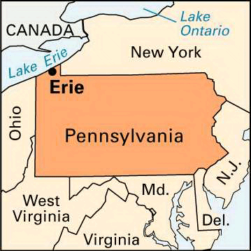
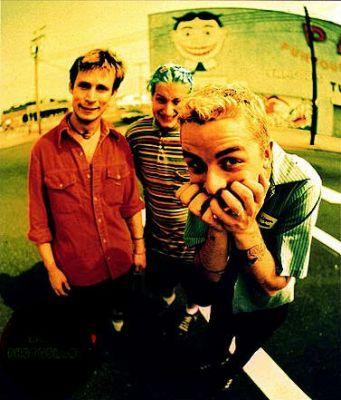
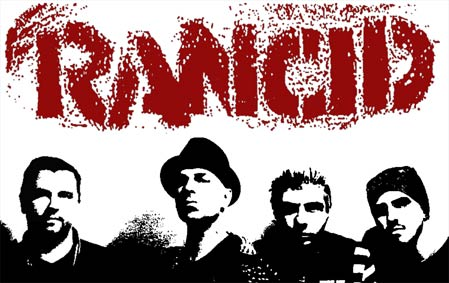
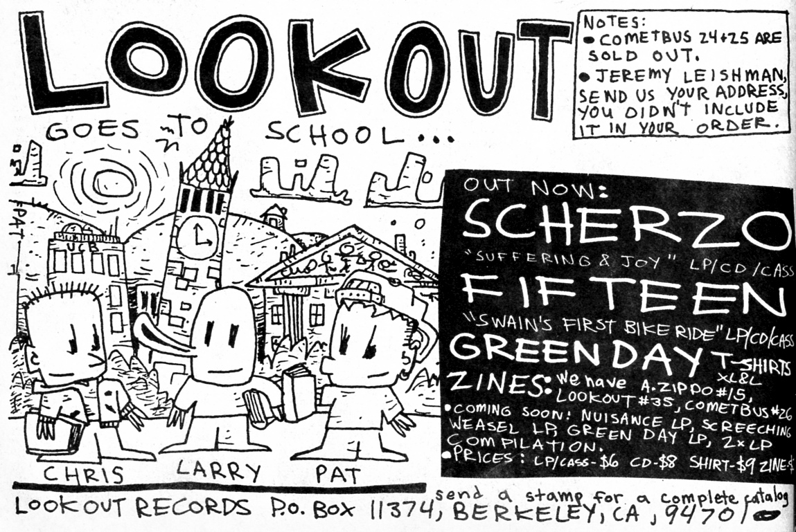
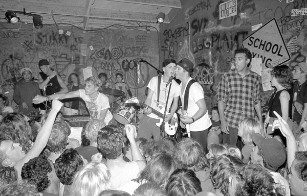
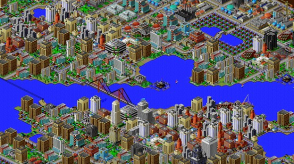

Hi Maptime, I'm Dave Walk
2014+: Software Engineer @ Grand Round Table
2011-2014: GIS Developer/Civic Technology Engineer @ City of Philadelphia
All the way back...
Punk rock
Punk rock
Punk rock
Punk rock



Crime data and PHL Crime Mapper
December 2012: PPD releases Part I crime data
January 2013: PHL Crime Mapper released. Three weekends + JavaScript + Leaflet + jQuery UI + Amazon S3
Feedback! New feature requests
2015:PHL Crime Mapper 2.0 Material Design + AngularJS + Go backend + Postgres database + more than three weekends
Interesting problems: Draw tool
Interesting problems: Mobile? Tablets? Wha?
Interesting problems: How else can this help?
Interesting problems: Marker clustering? Heatmaps?
Interesting problems: Alerts?
The data then Updated daily, new crimes showing up two days after being reported
The data then An REST API and WMS server via ArcGIS server and static .CSV
The data now?
Ideas Street network?
Ideas By time of day?
Ideas Weather? Seasons?
Ideas Proximity to placemarks?
Ideas Proximity to foot traffic?
Thx! @ddw
davewalk.net
(Presentation written while listening to Rancid songs)